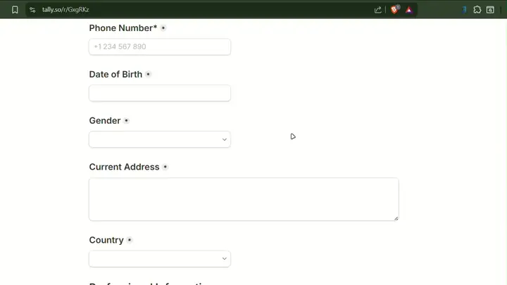

Your AI-Powered
Recruitment Assistant
Stop wasting time retyping the same information on every career site. Let your personal AI autofill complex job application forms instantly, locally, and securely.

How It Works
Set it up once, autofill everywhere.
Install & Open
Add the extension to Chrome from the Web Store. Click the icon to open the JobForm Copilot popup on any job board.
Configure AI (BYOK)
Bring Your Own Key! Go to Settings and securely paste your personal API key (Gemini, OpenAI, Groq, or Claude).
One-Click Autofill
Navigate to an application form, click the "Auto Fill" button, and watch as your personal AI assistant accurately fills every field.
Why JobForm Copilot?
Designed for speed, privacy, and flexibility.
PDF to AI Profile
Upload your CV directly. Our AI parses it and structures it into your local Candidate Profile instantly. No manual typing required.
Bring Your Own Key (BYOK)
Total flexibility. Choose the best model for your needs: OpenAI, Gemini, Groq, or Claude. You're in complete control of your AI API.
100% Local & Private
Your data never hits our servers. Your profile and API keys are stored locally in your browser, ensuring maximum privacy.
Smart Context & Multi-Language
The AI adapts to the form's language and context. It formats cover letters and answers specifically tailored to the job description.
Privacy Policy
Last Updated: June 17, 2026
At JobForm Copilot, your privacy and data security are our absolute
highest priorities. Since our extension is a client-side tool, we
operate with a strict "Local First" approach.
1. Local Data Storage
JobForm Copilot does not collect, track, or store your personal data
on any external servers. All information you provide (such as your
resume, work experience, and profile details) is saved strictly
within your browser's local storage
(chrome.storage.local).
2. Secure AI Processing To autofill forms, the extension sends your locally stored profile data and the specific form context directly to your chosen AI provider (e.g., Google Gemini, OpenAI, Groq) via their official APIs. We do not intermediate, intercept, or log any of these requests.
3. API Key Security (BYOK) The application operates on a "Bring Your Own Key" (BYOK) model. Your API keys are saved locally and are used exclusively to communicate directly with the respective AI providers from your machine.
4. Third-Party Services The AI providers process your data according to their own privacy policies. Please review the policies of Google, OpenAI, Groq, or Anthropic before entering their API keys into the extension.
5. User Consent By installing and using JobForm Copilot, you consent to the local storage of your data and its direct transmission to the AI models you authorize via API keys.